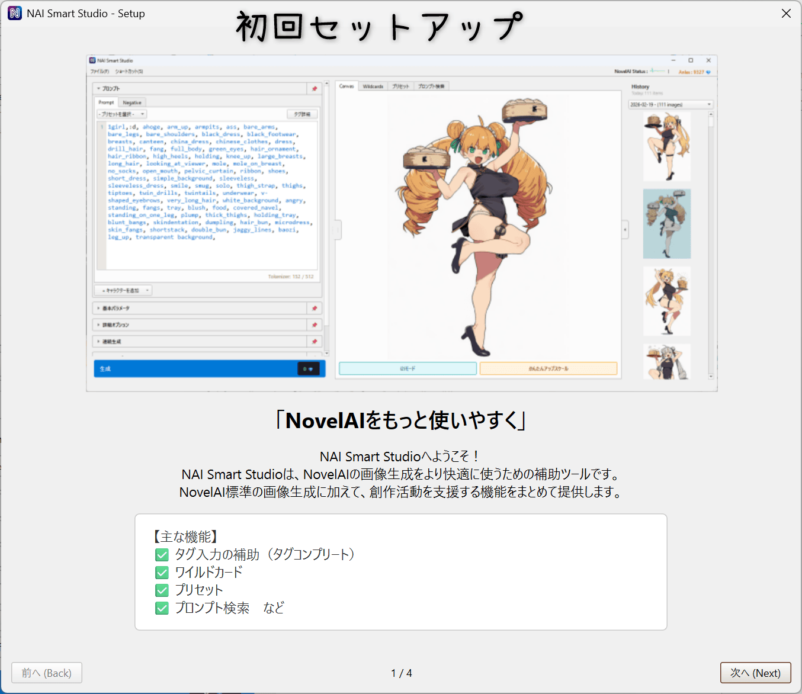
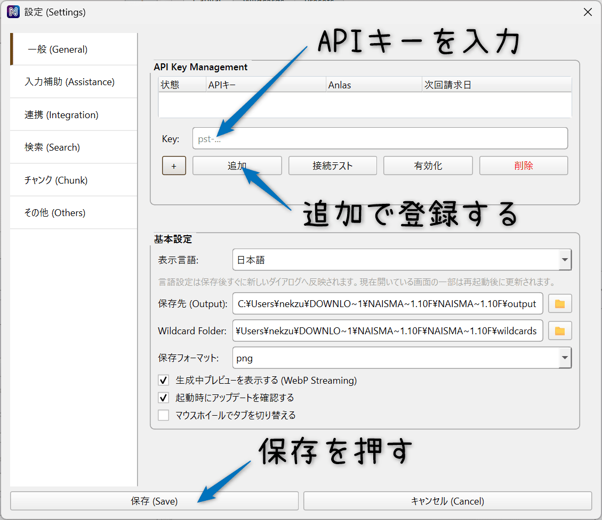
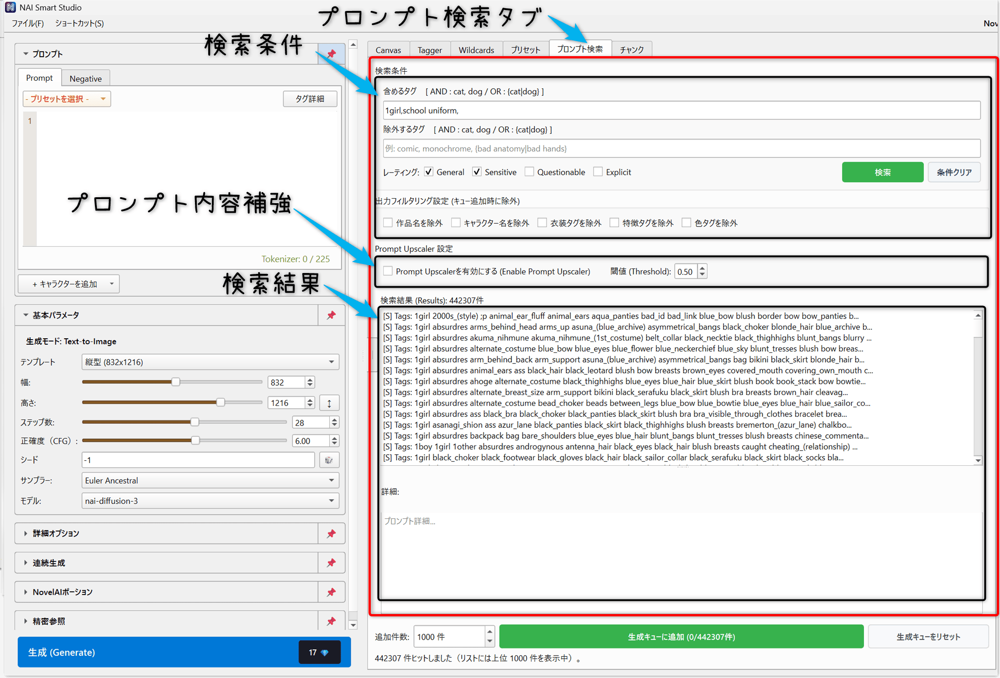
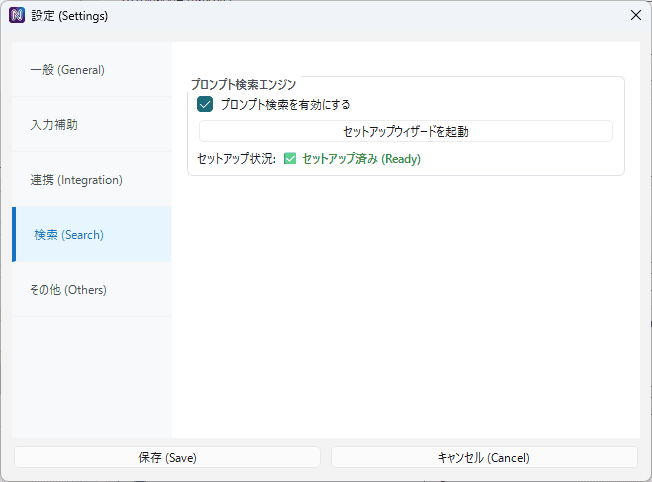
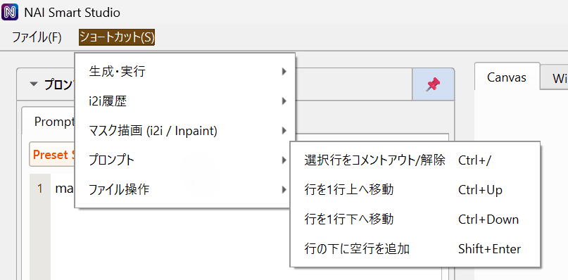

はじめに
NAI Smart Studioは、NovelAIでの画像生成をより快適に行うためのツールです。 Text-to-Image / Image-to-Image / Inpaint に加え、ワイルドカード、プロンプト検索、連続生成、かんたんアップスケールなど、公式UIにはない便利な機能を提供します。
画面構成
画面は3つのエリアに分かれています。
- 左パネル: プロンプトやパラメーターの設定
- 中央パネル: Canvas（キャンバス）と各種タブ
- 右パネル: 生成履歴
初回セットアップ
本ツールを使用するには、NovelAIのAPIキーが必要です。 初回起動時にAPIキーが設定されていない場合、設定を促すダイアログが表示されます。
APIキーの取得方法
- NovelAI公式サイトにログインします。
- 右上のアカウントメニューから「アカウント設定」を開きます。
- 「アカウント」タブ内の「永続的APIトークンを取得」から、APIキーを取得・コピーします。
APIキーの登録
初回起動時はチュートリアルに沿えば自動的に設定画面が開かれるため、「一般」タブでAPIキーを登録します。
画像生成の基本
左パネルにプロンプトと各種パラメーターを設定し、「生成」ボタンをクリックすると画像が生成されます。

プロンプト入力
- メインプロンプト: 生成したい画像の内容を記述します。
- ネガティブプロンプト: 生成から除外したい要素を記述します。
キャラクタープロンプト
複数のキャラクターを描く場合、「キャラを追加」ボタンから個別のプロンプト欄を追加できます。 これにより、各キャラクターの特徴を分けて指定できます。
基本パラメーター設定
「解像度テンプレート」から定番サイズを選択するか、幅・高さを個別に指定できます。
手動でも調整可能な他、ステップ数、CFGスケール、サンプラーやモデルなど、基本的なパラメーターが設定可能です。
生成コスト表示
生成ボタンの右側に、推定Anlasコストが表示されます。
解像度やステップ数によってコストが変動します
（基本Opusプラン想定の設定のため、Tablet,
Scrollプランの場合、ズレが発生する可能性があります）。
画像インポート
キャンバスに画像ファイルをドラッグ＆ドロップ、もしくは右パネルの履歴から画像を「Shift
+ クリック」で選ぶことで
画像インポートウィンドウが表示されます。
画像インポートウィンドウでは画像をどこにセットするか選択できます。
- Image to image / inpaint: 画像をキャンパスにセットします。
- NovelAI ポーション: 画像をNovelAI ポーションタブにセットします。
- 精密参照: 画像を精密参照タブにセットします。
- メタデータをインポート: メタデータをインポートし、画像をキャンパスにセットします
右パネルの履歴から画像を通常クリックで選択した場合は「Image to image / inpaint (画像をキャンパスにセット)」になります。
Image-to-Image / Inpaint
既存の画像を元に新しい画像を生成したり、画像の一部だけを描き直す機能です。

Inpaint（部分修正）
画像の一部だけを描き直したい場合は、マスクを描画します。
黒く塗られた部分だけが再生成されます。
左ドラック：マスク描画、右ドラッグ：マスク消去
- ブラシ: フリーハンドでマスクを描画
- 長方形: 矩形範囲を選択
- 折れ線: 多角形範囲を選択
Strength（強度）
元画像からどれだけ変化させるかを調整します。 値が大きいほど元画像から離れた結果になります。
- 1.0: 完全に新しく生成（マスク部分）
- 0.0: ほぼ元画像のまま
Noise
AIが画像にディテールを追加する程度。
- 1.0: 元画像にディティールを追加する
- 0.0: 元画像のディティールを維持する
Undo / Redo
生成結果を元に戻したい場合は「← Undo」ボタンで直前の画像に戻れます。「→ Redo」で取り消した操作をやり直せます。
かんたんアップスケール（Opus専用）
画像を高解像度化する専用モードです。NovelAI標準のアップスケールと比べて、元画像の雰囲気を保ちやすいことを重視しています。
また、Opusユーザー向けの動作に最適化されており、通常利用範囲では追加Anlas消費ゼロでアップスケールできます。
使い方
- Canvasに画像を読み込みます（履歴クリックでも可）。
- 中央下部の「かんたんアップスケール」を押してモードを切り替えます。
- アップスケーラー、倍率、強度を調整します。
- 「生成」ボタンでアップスケールを実行します。
出力画像は通常生成と同じく output/YYYY-MM-DD/ に保存されます。
nai_sd_upscale_YYYYMMDD_HHMMSS.png 形式で保存されます。
連続生成
自動で大量の画像を生成するための機能です。枚数指定のほか、時間指定などにも対応しています。
左パネル「連続生成」セクションから設定します。
生成モード
- 枚数指定: 指定した枚数（例: 100枚）を生成して終了します。
- 時間指定: 指定した時間（例: 60分）が経過するまで生成し続けます。
- 中断するまで: 停止ボタンを押すまで無限に生成します。
使用においては十分な待機時間を設定し、上記リスクを認識の上でご使用ください。
NovelAIポーション
参照画像から「雰囲気」「画風」「構図」を抽出して生成画像に適用します。 NovelAI v3～V4.5モデルで使用できます。

使い方
- 左パネルの「NovelAIポーション」セクションを開きます。
- 「＋」ボタンをクリックして画像やポーションを追加します（複数追加可能）。
- 参照強度と情報抽出度を調整します。
- その後、生成ボタンを押します（スロット上の「調合」ボタンを押してない場合、自動で調合が行われます）
パラメーター
- 参照強度 (Reference Strength): 参照画像の影響度合い。高いほど参照に近づきます。
- 情報抽出度 (Information Extracted): 参照から抽出する情報量。高いほど詳細を取り込みます。
ポーションセット
よく使う参照画像の組み合わせはセットとして保存できます。保存したセットは後から読み込んで再利用できます。
- .naiv4vibe / .naiv4vibeBundle: ポーションセットの保存・読み込みに対応
- 画像へのBundle埋め込み: 画像ファイルへポーション情報を含めて保存可能
精密参照
キャラクターのデザインやスタイルを固定・参照させます。キャラ参照機能から拡張された機能です。 ※v4～V4.5のモデルでのみ使用できます。

使い方
- 左パネルの「精密参照」セクションを開きます。
- 「＋」ボタンをクリックして参照画像を追加します（複数追加可能）。
- キャラクター / 絵柄 / キャラクターと絵柄のどれを参照するか選択します。
- 参照強度と情報抽出度を調整します。
- 設定後、生成ボタンを押します。
パラメーター
- 強度 (Strength): 参照画像の視覚的要素を、AI がどれだけ強く再現しようとするかをコントロールします。
- 抽出度 (Extracted): 0 のときは旧バージョンの挙動（スタイルや全体構図に対してやや柔軟）になり、1 に近づけるほど新しい挙動（キャラクターのディテールがより出やすい）になります。
Wildcards（ランダム要素）
指定した単語リストからランダムに1つを選んでプロンプトに挿入する機能です。
髪の色、服装、背景などをランダム化して、バリエーション豊かな生成ができます。
TXT / YAMLの2種のファイルに対応しています
基本の文法
- {A|B|C}: 候補の中から1つをランダムに選択
- __name__: Wildcard ファイル から1つをランダムに選択
- 以下の拡張構文は現バージョンでは非対応になります
- 重み指定 {0.5::red|0.1::white|0.2::black}
- 複数選択 {2$$cat|dog|bird` や 範囲 {1-2$$cat|dog}
- 変数 ${name=...} など
基本の使い方
- ファイルの用意: wildcardsフォルダー内にTXTかYAMLのワイルドカードファイルを用意します
- プロンプトへの記述: 使用したいワイルドカードを選び、「構文をコピー」ボタンを押します
- 生成: プロンプトにコピーしたものを貼り付けます。生成実行時に__name__ の部分がランダムな要素に置き換えられます
Wildcards：TXT文法
- TXTのワイルドカードファイル は 1行=1候補 です
- 空行と # で始まる行は無視されます
Wildcards：YAML文法
- YAMLのワイルドカードファイルは key: list 形式で階層化できます
- 詳しくはユーザーマニュアル.mdを参照ください
プリセット
よく使う共通プロンプトや除外タグをテンプレートとして管理する機能です。 中央パネルの「プリセット」タブからアクセスできます。
主な機能
-
先頭/末尾タグ (Prefix/Suffix):
すべての生成プロンプトの先頭または末尾に、指定したテキストを自動挿入します。
例: 画質タグ（masterpiece, best quality）を常に末尾につける、など。 - 自動除外 (Exclusion): プロンプトに特定の単語が含まれていた場合、生成時に自動的に削除します。
- プロンプト整形・整理: 重複削除やスペース削除などの整形が自動で行われます
- プリセット保存: 上記の設定を名前付きで保存し、切り替えて使用できます。

プロンプト検索
プロンプトデータベースから関連するプロンプトサンプルを検索し、生成キューへ直接投入できる機能です。
セットアップ
初回使用時は、検索用データベースの構築が必要です。
「設定」→「検索(Search)」セクションの「セットアップウィザードを起動」をクリックしてください。
※7.6GBのダウンロードが必要のため、時間に余裕のあるときに実施ください。

自動的にデータをダウンロードし、インデックスを作成します。完了後、プロンプト検索を有効にすると、中央パネルに「プロンプト検索」タブが表示されます。
検索の実行
中央パネルの「プロンプト検索」タブを使用します。
-
含めるタグ:
検索したいキーワードを入力します。AND検索はコンマ区切り、OR検索は
{A|B}の形式で指定します。 - 除外するタグ: 検索結果から除外したいキーワードを入力します。
- レーティング: 検索対象のレーティング（General, Sensitiveなど）をフィルタリングします。
- 出力フィルタリング設定: 作品名やキャラクター名などを生成時に自動除外します。
- Prompt Upscaler設定: 生成キュー実行時にタグ推論を使ってプロンプトを補強します。※PCスペックによって処理に時間がかかる可能性があります。
検索結果はリスト表示され、クリックで詳細を確認できます。
ヒット件数が多い場合、表示は最大1000件までに制限されます（検索自体は全件対象）。
「検索結果を生成キューに追加」 ボタンは、結果をシャッフル順で1000件ずつキューに追加します。
「生成」ボタンを押すと、キューに登録されたプロンプトが順番に使用されます。
モデル、画像サイズ、Steps等のパラメーターは現在のメイン画面の設定が適用されます。
設定・その他機能
プロンプト入力補完＆タグ詳細表示
プロンプトの入力補完やタグ詳細表示が行えます
-
プロンプト入力補完:
入力時に入力候補が表示されます、英語のほか日本語のキーワードにも対応しており、
プロンプト入力を効率的に行えます。 候補から選ばない場合は ,(カンマ)で補完ウィンドウを閉じます。 -
タグ詳細表示:
「タグ詳細」ボタンからタグの詳細を確認できます。
タグを選ぶことでそのタグを削除できるほか、？を押すことでwikiの説明の確認が可能です。 -
設定:
これら入力補助の設定はファイル→設定→入力補助 (Assistance) タブから変更可能です。
またプロンプト欄のフォントや文字サイズも変更可能です。
Eagle 連携
画像管理ソフト「Eagle」への自動保存設定です。生成と同時に、プロンプト情報もタグとしてEagleへ送信されます。

補助機能
- 生成中プレビュー: 設定の「一般」で有効化すると、生成中の途中プレビューをCanvasに表示できます。
- 起動時アップデート確認: 設定の「一般」で有効化すると、起動時に新バージョン確認を行います。
設定画面一覧
一般 (General)

入力補助 (Assistance)

検索 (Search)
その他 (Others)

ショートカット
よく使うショートカットの一覧です。メニュー「ショートカット(S)」からも確認できます。
生成・実行
- Ctrl + Enter: 生成開始
- Ctrl + Shift + Enter: 連続生成開始
キャンバス / マスク
- ←: 画像履歴 Undo
- →: 画像履歴 Redo
- Ctrl + Z: マスク Undo
- Ctrl + Y: マスク Redo
Prompt Editor
- Ctrl + /: 行コメント切替
- Ctrl + ↑: 現在行を上へ移動
- Ctrl + ↓: 現在行を下へ移動
- Shift + Enter: 下に空行を追加
ファイル操作
- Ctrl + O: 画像を開く
- Ctrl + S: 名前を付けて保存（画像選択時）
- Ctrl + C: 画像をコピー（画像選択時）
- Ctrl + E: Eagleに保存（画像選択時）
- Ctrl + Shift + E: 保存先フォルダを開く（画像選択時）